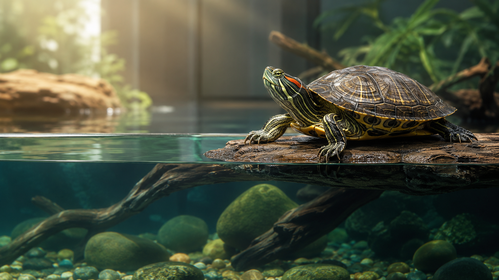

Discover how long Red-Eared Sliders live, what affects their lifespan, and how proper care can help your turtle live a healthy life for decades.
📖 6 min read•Last Updated: July 2026

Quick Answer
A healthy Red-Eared Slider (RES) can live
20–40 years in captivity, while wild turtles usually
live 20–30 years. Proper nutrition, UVB lighting,
filtration, clean water and regular health care play a major role in
helping them reach their full lifespan.
Key Takeaways
Red-Eared Sliders commonly live 20–40 years in captivity.
Clean water and strong filtration significantly improve long-term health.
Proper UVB lighting is essential for shell development and calcium metabolism.
A varied diet helps prevent nutritional deficiencies and obesity.
Consistent basking temperatures support immunity and digestion.
How Long Do Red-Eared Sliders Live?
Red-Eared Sliders (Trachemys scripta elegans) are among the longest-living pet turtles in the world. With proper care, many individuals comfortably live between 20 and 40 years, and some even exceed 40 years under exceptional conditions.
Unfortunately, many turtles never reach their natural lifespan because of poor husbandry. Inadequate filtration, lack of UVB lighting, incorrect diets and small enclosures remain some of the most common reasons for premature illness and death.
Wild vs Captivity
Wild turtles face predators, disease, pollution and food shortages, making survival much more challenging. Pet turtles that receive clean water, balanced nutrition and regular veterinary care often outlive their wild counterparts.
Environment
Average Lifespan
Wild
20–30 years
Captivity
20–40+ years
5 Factors That Affect a Red-Eared Slider's Lifespan
1. Water Quality
Clean water is one of the biggest contributors to a healthy turtle. Poor water quality encourages bacterial growth, shell infections and skin problems. A quality canister filter and regular water changes help maintain a stable environment.
2. Diet & Nutrition
A balanced diet should include high-quality pellets, leafy greens and appropriate protein based on the turtle's age. Overfeeding and an unbalanced diet are common causes of obesity and nutritional deficiencies.
3. UVB Lighting
UVB light enables turtles to produce Vitamin D₃, allowing them to absorb calcium properly. Without UVB, turtles are at risk of metabolic bone disease and shell deformities.
4. Basking Area
Every Red-Eared Slider needs a dry basking platform with the correct temperature. Regular basking helps with digestion, shell health and immune function.
5. Veterinary Care
Early recognition of health problems and timely veterinary treatment greatly improve the chances of a long, healthy life.
Frequently Asked Questions
Can a Red-Eared Slider really live for 40 years?
Yes. With excellent care, many Red-Eared Sliders live well beyond 30 years, and some reach or exceed 40 years.
What is the biggest reason pet turtles die early?
Poor husbandry is the most common cause. Dirty water, lack of UVB lighting, incorrect diet, and inadequate basking conditions can lead to chronic health problems.
Do larger tanks help turtles live longer?
A larger aquarium provides better swimming space, more stable water quality, and reduces stress. While tank size alone doesn't increase lifespan, it supports better overall health.
Can I keep my turtle without a filter?
No. Red-Eared Sliders produce a large amount of waste. A powerful filter is essential to maintain clean, healthy water.